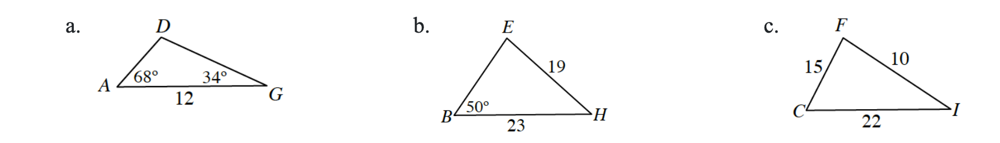

If \(\cos(x)=-\frac{4}{5}\) and \(\sin(x)<0\), calculate exact values of \(\sin(2x)\), \(\cos(2x)\), \(\sin\left(\frac{x}{2}\right)\), and \(\cos\left(\frac{x}{2}\right)\). First draw a triangle in the unit circle, calculate the values of the missing sides, and then determine if the value of the function you are using in the identities is positive or negative based on the location of the angle.
Rewrite each expression as the sine, cosine, or tangent of an angle.
\(\sin\left(\frac{3\pi}{2}\right)\cos\left(\frac{\pi}{7}\right)-\cos\left(\frac{3\pi}{2}\right)\sin\left(\frac{\pi}{7}\right)\)
\(\cos\left(\frac{\pi}{3}\right)\cos\left(\frac{3\pi}{10}\right)-\sin\left(\frac{\pi}{3}\right)\sin\left(\frac{3\pi}{10}\right)\)
\(\frac{\tan(203^\circ)-\tan(6^\circ)}{1+\tan(203^\circ)\tan(6^\circ)}\)
Simplify: \(\frac{\tan(x)\csc(x)}{\sec(x)}\)
Determine all values of \(\theta\) where \(0\leq\theta<2\pi\).
\(\csc(\theta)=\frac{2\sqrt{3}}{3}\)
\(\sec(\theta)=-\sqrt{2}\)
\(\tan(\theta)\) is undefined
\(\cot(\theta)=-1\)
Solve by factoring. Remember to get zero alone on one side of the equation first.
\(8c^2=4c\)
\(s^2+s=2\)
Solve exactly for \(x\): \(\frac{\sqrt{5+x}}{\sqrt{5}+\sqrt{2}}=3\)
This problem is a checkpoint for solving triangles. Solve each of the following triangles.

Let \(f(x)=\sin(x)\).
Calculate the average rate of change from \(x=\frac{\pi}{4}\) to \(x=\frac{\pi}{2}\).
Write an expression for the average rate of change from \(x=\frac{\pi}{4}\) to \(x=\frac{\pi}{4}+h\).
Use the fact that \(\sin(A+B)=\sin(A)\cos(B)+\cos(A)\sin(B)\) to show that the expression you wrote in part (b) can be rewritten as \(\frac{1}{\sqrt{2}}\left(\frac{\cos(h)+\sin(h)-1}{h}\right)\).
Use the fact that \(\lim_{x\to 0}\frac{\sin(x)}{x}=1\) and \(\lim_{x\to 0}\frac{\cos(x)-1}{x}=0\) to evaluate \(\lim_{h\to 0}\frac{1}{\sqrt{2}}\left(\frac{\cos(h)+\sin(h)-1}{h}\right)\).